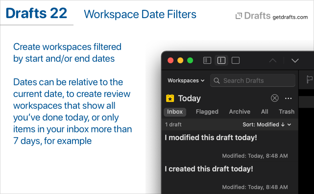

Drafts 22 added the ability to filter workspaces by date.

Example Workspaces
We have created a couple of ready-to-use example workspaces displaying possible applications of date filters which can be installed from the Directory:
- Today: This workspace has a “start” date filter which shows only drafts modified on the current date. Great for doing a quick review on what you have captured or editing at the end of the day.
- > 7 Days Old: Workspace with an “end” date filter which displays only drafts which have not been modified in the last 7 days. Great for reviewing and processing stale content in your inbox.
Configuring Date Filters
These examples might be useful as-is, but date filters can be edited in the workspace editor along with other workspace settings. For details on editing workspaces, learn the basics of editing workspaces in the User Guide.
If a “start” date filter has been configured for a workspace, it will show only items greater than or equal to the date. Similarly, an “end” date filter will limit to only items less than or equal to the date.
Date filters can be applied to the creation, modification, or last accessed date fields and can have specific absolute dates, or be relative dates that are plus or minus a specific number of days from the current date. More details on configuring date filters in the User Guide.
Scripting
Date filters can also be set when scripting workspaces, which allows creating and applying temporary workspaces via actions. For sample code, see the QueryDate docs in the scripting reference.